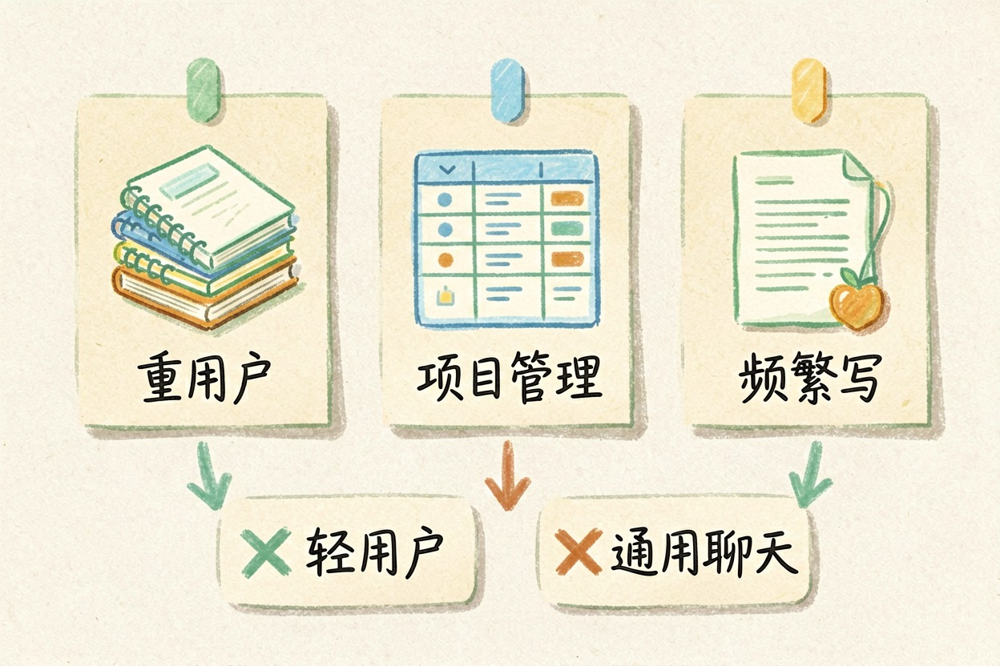
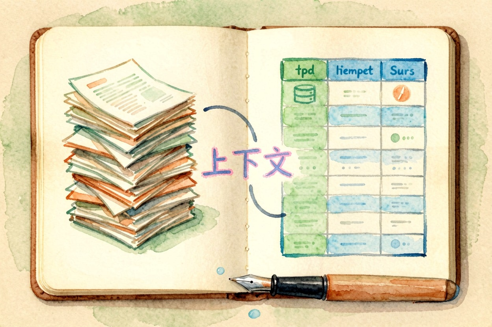
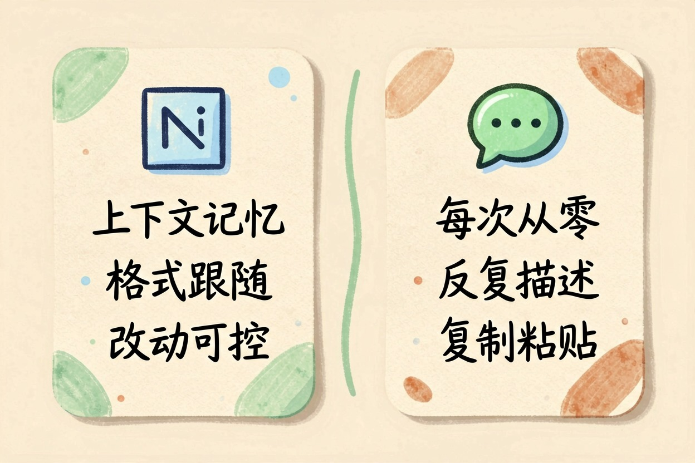
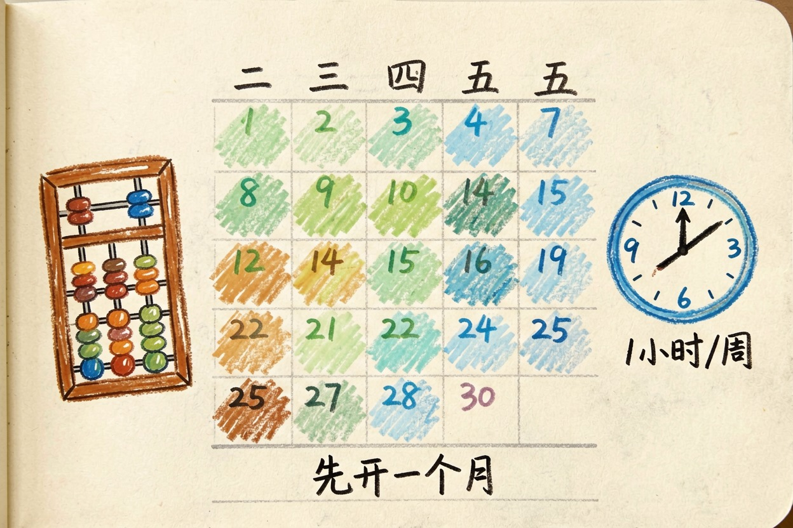

Notion AI 值得开吗？适合的三类人
别被功能清单带走，算账要看使用频率：每天重度使用的人值得开，随手记账的人免费就够。
Notion AI 值得开吗？先给决策

Notion AI 值得开吗？一句话：笔记重度、靠 Notion 管项目或知识库的人值得开。只在里面记流水账的，先别开。它值钱的地方不在生成质量，而在「在上下文里干活」。它不是给所有人的功能，是给特定用法的人准备的。
三类人值得开、两类别开

值得开的三类：把 Notion 当第二大脑、笔记量很大的重用户。靠数据库管项目、客户、库存的人。写文档频繁、要 AI 按现有结构改的人。两类别开：只是随手记几笔、一周打开一两次的人，别为它付费。指望它当通用大模型、什么都能聊的人，也用不上这个订阅。判断方法就一句：你的笔记是不是每天都要回看。
Notion AI 到底多出来什么

写作、问答、总结、数据库辅助，它都能碰。真正的差异是上下文：它知道你最近在改哪篇文档、数据库里存了什么。回答天然贴着你的内容。把 AI 当同事，它会记得你上周改到哪。这是它值钱的地方。想验证值不值，把这段提示词丢进一篇长笔记试试：
请基于我知识库里的项目记录，生成一份本周进展摘要
要求：按「完成/进行中/阻塞」三段输出
阻塞项补一句影响说明，不要编造不在记录里的事实和直接用 ChatGPT、豆包写的区别

| 维度 | Notion AI | 直接用大模型 |
|---|---|---|
| 上下文记忆 | 知道你的笔记与数据库 | 每次从零开始 |
| 格式跟随 | 贴合现有文档结构 | 需要反复描述 |
| 改动可控 | 就地改、可回退 | 复制粘贴往返 |
| 成本 | 订阅制 | 按次或按量 |
表格看着抽象，实际差别在每次改动都要不要重新描述一遍。办公场景里它能和别的工具配合。会议整理看AI 会议纪要工具对比。做 PPT 有用 AI 做 PPT 的完整步骤。表格处理看用 AI 处理 Excel 表格。
值不值怎么算：按使用频率分档
别按「月费多少钱」算，按你每周实际投入的时间算。每天至少半小时、写周报写方案的人，值得开。每周累计不到一小时，免费档够用。
免费档的体验够不够，就看你能不能忍来回复制粘贴。能忍，就省下这笔钱。忍不了，再掏钱。写周报、写方案这类重复劳动，它一次能省十几分钟。
什么时候该续费？过去一个月用满免费额度、又嫌往返复制麻烦，再考虑。团队一起用，先小范围试点再定。先跑两周，再看要不要全员开。
只想做简单总结和改写，很多免费工具能顶，用 AI 写公众号文章的思路也能套。别为低频需求续年付。先开一个月用满再说，合不上再退订也行。具体价格与档位以 Notion 官网当期为准，看Notion 定价页和帮助中心。算清频率再做决定，比看任何评测都靠谱。Notion AI 值得开吗，算清使用频率就有答案。
本文信息核对于 2026-08-06。AI 产品的价格、免费额度与功能变动频繁，实际以各工具官网当前说明为准。